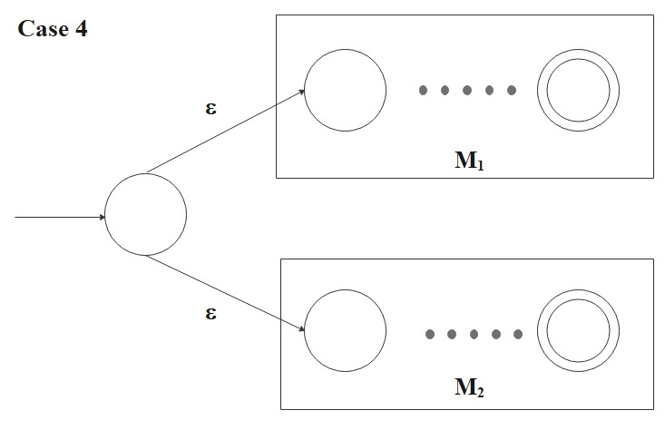
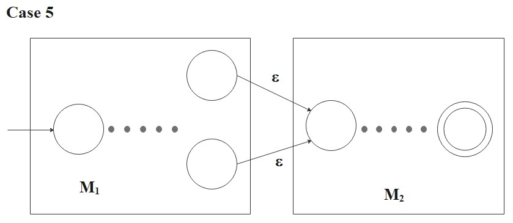
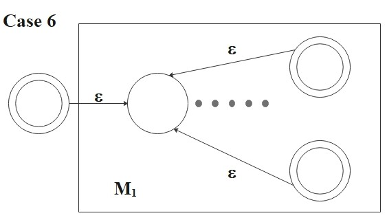

- \(a \in \Sigma\)
- \(\epsilon\) Note: This is the language containing the empty string.
- \(\emptyset\) Note: This is the language that does not contain any strings.
- \((R_1 \cup R_2)\)
- \((R_1 \circ R_2)\)
- \((R_1^*)\)
A language can be described by regular expressions is indeed, a FA-recognizable language. This is why such a language is called a regular language. To distinguish between \(R\) and the language that it describes, we write \(L(R)\) to be the language of \(R\).
Theorem 3:
A language is regular if and only if some regular expression describes it.
So,
- If a language is described by a regular exression, then it is regular.
- If a language is regular, then it is described by a regular expression.
Proof: Part 1
For each case in the definition, we want to convert regular expression \(R\) into NFA \(M\) recognizing some
language because we know that if an NFA recognizes the language, then it is regular.
- \(R = a\) for some \(a \in \Sigma\) Then \[ L(R) = \{a\} \] and the following NFA recognizes \(L(R)\): \[ M = (\{q_0, q_1\}, \Sigma, \delta, q_0, \{q_1\}) \] where \(\delta(q_0, a) = \{q_1\}\) and \(\delta(r, b) = \emptyset\) for \(r \neq q_0\) or \(b \neq a\).
- \(R =\epsilon\) Then \[ L(R) = \{\epsilon\} \] and the following NFA recognizes \(L(R)\): \[ M = (\{q_0\}, \Sigma, \delta, q_0, \{q_0\}) \] where \(\delta(r, b) = \emptyset\) for any \(r\) and \(b\).
- \(R = \emptyset\) Then \[ L(R) = \emptyset \] and the following NFA recognizes \(L(R)\): \[ M = (\{q\}, \Sigma, \delta, q, \emptyset) \] where \(\delta(r, b) = \emptyset\) for any \(r\) and \(b\).
- \(R = (R_1 \cup R_2)\) Then \[ L(R) = (R_1 \cup R_2) \] and the following NFA recognizes \(L(R)\): \[ M = ( Q_1 \cup Q_2 \cup \{q_0\}, \Sigma, \delta, q_0, F_1 \cup F_2) \] where for any \(q \in Q\) and any \(a \in \Sigma_{\epsilon}\), \[ \delta(q, a) = \begin{cases} \delta_1(q, a) &\text{if \(q \in Q_1\)}, \\ \delta_2(q, a) &\text{if \(q \in Q_2\)}, \\ \{{q_0}_1, {q_0}_2\} &\text{if \(q=q_0\) and \(a = \epsilon\)}, \\ \emptyset &\text{if \(q=q_0\) and \(a \neq \epsilon\)}. \\ \end{cases} \]
- \(R = (R_1 \circ R_2)\) Then \[ L(R) = (R_1 \circ R_2) \] and the following NFA recognizes \(L(R)\): \[ M = ( Q_1 \cup Q_2 , \Sigma, \delta, {q_0}_1, F_2) \] where for any \(q \in Q\) and any \(a \in \Sigma_{\epsilon}\). \[ \delta(q, a) = \begin{cases} \delta_1(q, a) &\text{if \(q \in Q_1\) and \(q \not\in F_1\) }, \\ \delta_1(q, a) &\text{if \(q \in F_1\) and \(a \neq \epsilon\) }, \\ \delta_1(q, a) \cup \{{q_0}_2\} &\text{if \(q \in F_1\) and \(a = \epsilon\) } \\ \delta_2(q, a) &\text{if \(q \in Q_2\) }. \\ \end{cases} \]
- \(R = (R_1^*) \) Then \[ L(R) = (R_1^*) \] and the following NFA recognizes \(L(R)\): \[ M = ( Q_1 \cup \{q_0\}, \Sigma, \delta, q_0, \{q_0\} \cup F_1) \] where for any \(q \in Q\) and any \(a \in \Sigma_{\epsilon}\), \[ \delta(q, a) = \begin{cases} \delta_1(q, a) &\text{if \(q \in Q_1\) and \(q \not\in F_1\) } \\ \delta_1(q, a) &\text{if \(q \in F_1\) and \(a \neq \epsilon\) }, \\ \delta_1(q, a) \cup \{{q_0}_1\} &\text{if \(q \in F_1\) and \(a = \epsilon\) }, \\ \{{q_0}_1\} &\text{if \(q = q_0\) and \(a = \epsilon\) }, \\ \emptyset &\text{if \(q=q_0\) and \(a \neq \epsilon\)}. \\ \end{cases} \]

For case 4, 5, and 6, let \(M_1 = (Q_1, \Sigma, \delta_1, {q_0}_1, F_1) \) be the NFA recognizes \(L(R_1)\) and \(M_2 = (Q_2, \Sigma, \delta_2, {q_0}_2, F_2) \) be the NFA recognizes \(L(R_2)\). Also, we assume that the state sets \(Q_1\) and \(Q_2\) are disjoint.


